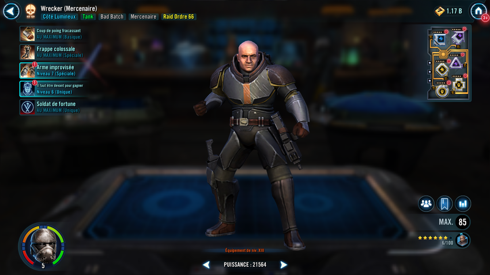
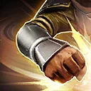
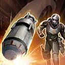

Wrecker (Mercenary)
A stalwart Tank whose loyalty to his allies is equal only to his love of explosives
A stalwart Tank whose loyalty to his allies is equal only to his love of explosives


Dispel all buffs on target enemy and deal Physical damage to them twice.
During Wrecker's turn, remove 5% Turn Meter for each buff dispelled from the target enemy. All other Bad Batch allies gain 10% Turn Meter.
Deal Physical damage to target enemy and inflict Disarm for 2 turns or until Wrecker (Mercenary) is defeated and remove it from all other enemies, which can't be copied, dispelled, or resisted. If the target enemy was already Disarmed, this ability deals 50% more damage (excluding raid bosses and Galactic Legends).
If Wrecker has more than 30 stacks of Soldier of Fortune, he and the weakest other Bad Batch ally gain 50% Turn Meter.
Taunt for 2 turns.

Deal Physical damage to all enemies and Stagger them for 2 turns. Dispel all debuffs on Bad Batch allies. If Defense Down, Speed Down, or Tenacity Down were dispelled on a Bad Batch ally, they gain the opposite version of that debuff for 2 turns.
Each time this ability is used, Wrecker (Mercenary) gains 25% Defense, Max Health, and Max Protection (stacking, max 100%) until the end of battle.
Bad Batch allies gain 75% Tenacity. At the start of each encounter, Wrecker Taunts for 2 turns.
Whenever an enemy attacks out of turn, Bad Batch allies recover 5% Health and Protection.
Whenever Bad Batch allies are inflicted with Healing Immunity, they dispel it, recover 25% Health and Protection, and gain Defense Up for 2 turns. Whenever an enemy gains 50% or more bonus Turn Meter before a Bad Batch ally takes a turn, all Bad Batch allies gain 15% Turn Meter.
When another Bad Batch ally is inflicted with Captive, the cooldown of Improvised Weapon is reset and Wrecker gains Taunt for 2 turns, which can't be copied, dispelled, or prevented. While another Bad Batch ally is inflicted with Captive, Wrecker has +25% Max Health and Protection.
omicron Boost : While in Territory Battles: Bad Batch allies gain 100% Max Health and Max Protection and 50% Offense.
At the start of each encounter, Wrecker gains 100% Defense (stacking) until the end of the battle, which persists through defeat. Whenever an enemy takes a turn, Bad Batch allies gain 5% Turn Meter.
If a Bad Batch ally is defeated after Captive has already been used while Wrecker is active, they revive with 100% Health and Protection and Stealth for 2 turns, this effect can only occur once per character.

At the start of battle, Wrecker (Mercenary) gains 1 stack of Soldier of Fortune for each Relic Amplifier level he has.
Whenever a Bad Batch or Mercenary ally is critically hit, Wrecker gains 3 stacks of Soldier of Fortune. Whenever Wrecker is inflicted with a debuff, he loses 5 stacks of Soldier of Fortune.
At the start of their turn all Mercenary allies gain 5% Defense (stacking) and 1% Tenacity (stacking) for each stack of Soldier of Fortune they have until the start of their next turn.